Chapter 3: The Invention of Game & Watch (1980–1983)
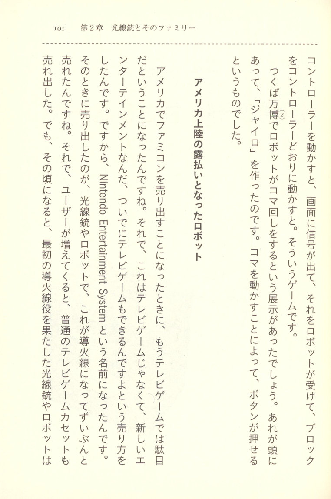
(2) Tsukuba World Exposition, 1985.
The Robot That Became the Famicom's Calling Card in America
When it came time to launch the Famicom in America, people thought, well, it's just another TV game — it's no good. So the idea was to sell it in a completely new way, as entertainment. It wasn't a TV game; it was a new form of entertainment. And along with that came television games too — that's the Nintendo Entertainment System, which is where the name came from. It's a pretty bold name. When it went on sale, the light gun and the robot drove sales as the lead attractions. But as time went on and the user base grew, the ordinary TV game cartridges also started selling. And by that point, the light gun and robot that had served as the original lead attractions —
 p.105 — were no longer needed. You see, the signal sent to the robot via the screen flickers on the display. To the naked eye it looks like something flickering, but it's actually some kind of line. And since it's not visible to the eye, there are probably plenty of people thinking up all sorts of ways to use it somewhere.
p.105 — were no longer needed. You see, the signal sent to the robot via the screen flickers on the display. To the naked eye it looks like something flickering, but it's actually some kind of line. And since it's not visible to the eye, there are probably plenty of people thinking up all sorts of ways to use it somewhere.
[IMAGE: The packaged box of the Family Computer Robot, showing the robot unit visible through box window]
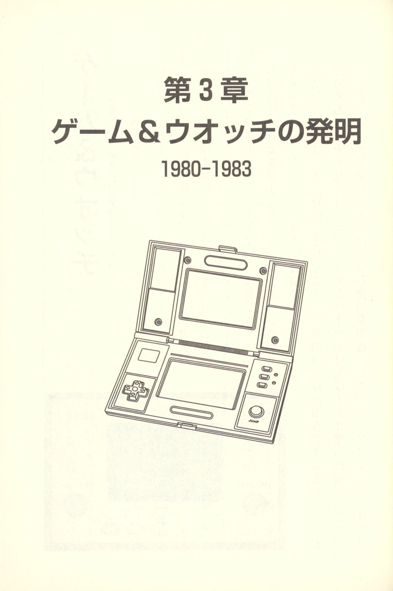
1980–1983
[IMAGE: Line drawing illustration of a Game & Watch dual-screen handheld device, shown open at an angle]
 p.107 Game & Watch
p.107 Game & Watch
1980 (Showa 55). Price at time of release: ¥5,800 and up.
Having sent works out into the world through the Ultra series, the Light Gun series, and the Amusements series, Yokoi was searching for his next great pillar. What emerged from that search was the "Game & Watch" (see page 144) — which would later become the massive pillar known as the Game Boy.
At the time, Nintendo was struggling financially. Yet the hit success of Game & Watch turned things around completely, transforming the company into one generating profits of around ¥15 billion — all past debts cleanly wiped away. Game & Watch became a huge pillar of work for Nintendo at the time.
[IMAGE: Photograph of the original Game & Watch "Ball" unit, showing the handheld LCD game device with LEFT and RIGHT buttons and three buttons along the bottom labeled GAME A, GAME B, and TIME]
Sales figures soared. In the year following Game & Watch's release, Nintendo surpassed ¥60 billion in revenue. From there, the Famicom, the Super
 p.108 Famicom, Game Boy, and Nintendo's glorious advance began. Game & Watch was a massive hit product, and that year it ranked near the top of the "hit product rankings." Yet its greatness was not fully understood domestically — it was selling even more overseas than in Japan. Nintendo's worldwide expansion began with this product, which is remarkable in itself. And with Game & Watch, Yokoi's approach to his work changed significantly. Because hardware and software became unified into a single product with Game & Watch, he had to continually think up new games from within it. From that process, the greatest Game & Watch hit of all — "Donkey Kong" — was born.
p.108 Famicom, Game Boy, and Nintendo's glorious advance began. Game & Watch was a massive hit product, and that year it ranked near the top of the "hit product rankings." Yet its greatness was not fully understood domestically — it was selling even more overseas than in Japan. Nintendo's worldwide expansion began with this product, which is remarkable in itself. And with Game & Watch, Yokoi's approach to his work changed significantly. Because hardware and software became unified into a single product with Game & Watch, he had to continually think up new games from within it. From that process, the greatest Game & Watch hit of all — "Donkey Kong" — was born.
Conceived on the Bullet Train, Realized in a Car
"Game & Watch was something I came up with on the bullet train, you see. I was riding the Shinkansen and killing time out of boredom. I saw a salaryman playing with a calculator to pass the time. Watching that, I thought, 'Ah. But a plain calculator is only so
 p.109 interesting as a toy.' That was the idea, and at the time I was just quietly nurturing it inside myself.
p.109 interesting as a toy.' That was the idea, and at the time I was just quietly nurturing it inside myself.
There's a little episode from around when this idea came to fruition. I've always loved cars — I used to drive myself everywhere. Back then I was riding around in a secondhand car with left-hand drive. The company president had a dedicated driver, you see. And one day, at the Osaka Plaza Hotel, the head of HR came to meet me, and it turned out that besides the president, there was no one else at the company who could drive. 'Isn't there someone who can drive me around?' he said. Well, I do have my pride — I'm not going to be someone's chauffeur. So that's the story.
At the time, I was head of product development, and when I rode with the company president and he started talking about work, he said: 'The small electronic calculator — if we made it bigger, we could sell it as a big game, couldn't we?' That was an interesting idea, I thought, but then: 'Today's small calculator is, in our terms, a small electronic toy — so if we made it bigger, we could sell it as "The Big Game," couldn't we?' And even though ordinary salarymen were playing games on their calculators, the people around them didn't seem to pay it much mind.
 p.110 The thing is, at the meeting, it turned out that Sharp's Saeki (旭) was sitting right next to the company president. So, since Sharp is number one in desktop calculators, after I said what I said, the president spent about a week suddenly pushing Sharp to make a desktop-sized game machine. I had no idea what was going on — Sharp could do it, so the president came back and said, 'Go ahead and make it happen.' And from there, things moved quickly toward realizing a desktop-sized game machine.
p.110 The thing is, at the meeting, it turned out that Sharp's Saeki (旭) was sitting right next to the company president. So, since Sharp is number one in desktop calculators, after I said what I said, the president spent about a week suddenly pushing Sharp to make a desktop-sized game machine. I had no idea what was going on — Sharp could do it, so the president came back and said, 'Go ahead and make it happen.' And from there, things moved quickly toward realizing a desktop-sized game machine.
As far as I was concerned, it was just my idea — out of pride, as the head of product development. But after that, nothing came of it, and the world moved on with its timing, and the driver happened to catch a cold that day — and the whole thing just faded away.
For me, the fact that ordinary salarymen would sit next to the company president and play games without any shame —
"Killing time" — A Design Pursuing the Human Engineering of Idle Moments
— playing with a big game machine on the Shinkansen, that something like that wouldn't embarrass us salarymen —
 p.111 that we could play without feeling self-conscious — that was the thought behind it. So if you're sitting down, you naturally fold your hands in your lap. And playing in that position, without anyone noticing — that's what the landscape-oriented clamshell body was designed for, I thought.
p.111 that we could play without feeling self-conscious — that was the thought behind it. So if you're sitting down, you naturally fold your hands in your lap. And playing in that position, without anyone noticing — that's what the landscape-oriented clamshell body was designed for, I thought.
In that state, you can only operate it with your thumbs. So the Game & Watch design was about hiding the game inside something, so you could play it without anyone knowing. That's why the buttons-only approach was what it was. After that, the multi-screen unit came along, and even button operation became perfectly fine, so by that point it had practically become a household appliance. Around the time that sort of thing appeared on the scene, the d-pad came along — citizens' rights were granted to the game machine, so to speak, under the name "Donkey Kong." Things had come far enough that you could play openly without hiding it anymore.
So, since it was no longer something you had to conceal, Multi became popular with adults too. Children would buy it, and it ended up becoming a market in its own right — though we never imagined it would sell to adults. It wasn't just for kids — it had become a full-fledged market, that's how I see it.
 p.112 The Multiplier Effect of Turning Game & Watch into a Series
p.112 The Multiplier Effect of Turning Game & Watch into a Series
Game & Watch was never something I intended to turn into a series. Juggler — I only ever thought of it as one game. But then the president said to me, "If you're going to do it, come up with as many game ideas as you can and give us two or three kinds." So I started thinking about Juggler, and that got things off to an awkward start — because including a whack-a-mole type of game in there, the image of "there are three kinds" was terrifying. So I said, "Well, if there are three kinds," and each one sold reasonably well on its own, and they ended up being serialized. The multiplier effect of having users respond to each one was enormous, and it hit us that "this approach works." Then at that point it became: "think up three or four more next time," and so on. And by then, we realized that this way of thinking was fine, and game ideas just kept popping out one after another.
 p.113 Game & Watch ended up producing around fifty or sixty titles in total, I think. Among those, the ones I consider my masterpieces — the ones I was wringing out new ideas for every single day back then — are Juggler, Manhole, Fire, and Turtle Bridge.
p.113 Game & Watch ended up producing around fifty or sixty titles in total, I think. Among those, the ones I consider my masterpieces — the ones I was wringing out new ideas for every single day back then — are Juggler, Manhole, Fire, and Turtle Bridge.
Turtle Bridge is one of my own ideas. At the time I thought it was quite a gem. The game where you cross to the other side of the pond by walking across the backs of turtles — you watch the turtle floating up in the water below the bridge, then the turtle on the other side... the image is one of crossing the pond chasing the fish, diving under the water. So it becomes a rather grand, showboating kind of image, doesn't it.
The basic concept of the game is pursuing novel backgrounds. The idea itself may be trivial, but the interesting thing is that you can make it more and more elaborate by searching for new backgrounds. In terms of animation, various things became references for me, and I became obsessed with how to find backgrounds. The president said to me, "It's about time you came up with three kinds," and I started thinking — but the idea itself is nothing special. And yet, the fact that you can make something worthwhile out of it by searching for a new background is what makes it interesting. My new background is animation, and the president says, "That's no way to put it" — casually, just like that. "Come on, think about it—"
 p.114 "Copy this diagram for me," something like that. Back then, I was placing a drafting table next to me so I could trace diagrams myself, but in order to keep doing this work, management started gathering designers and they became the center of the work. For Game & Watch, the detailed work of drawing with compass and ruler — midway through, I was able to leave that to the designers. From there, the characters in the Game & Watch screen expressions and so on, even the parts the manga artists were good at, I came to be able to entrust to them. So to begin with the screen was rather grand, and from manga it became more and more fun.
p.114 "Copy this diagram for me," something like that. Back then, I was placing a drafting table next to me so I could trace diagrams myself, but in order to keep doing this work, management started gathering designers and they became the center of the work. For Game & Watch, the detailed work of drawing with compass and ruler — midway through, I was able to leave that to the designers. From there, the characters in the Game & Watch screen expressions and so on, even the parts the manga artists were good at, I came to be able to entrust to them. So to begin with the screen was rather grand, and from manga it became more and more fun.
The Multi-Screen Masterpiece: "Oil Panic"
The idea for the multi-screen — I think it was indeed something the president suggested, wasn't it. "Can't we make two games playable at the same time?" he said. But what came out of that was, I think, truly remarkable. Simply making a Game & Watch with a liquid crystal screen of double the area is extremely difficult in its own right.
 p.115 It's quite easy to simply raise the price by that much, but since it's split into two, you have to think up games that make that meaningful — that's difficult, I thought. So I was racking my brain over all sorts of things. That's when "Oil Panic" came to mind. Oil Panic simultaneously uses two screens, you see. This game alone is a truly wonderful idea, I think, and it won our admiration. (Laughs.) The two screens link together beautifully, and you have to keep watching both screens yourself — it simply cannot be expressed on a single screen. That's exactly what makes it a multi-screen game, and this game alone caused the score to jump from 20 to 30.
p.115 It's quite easy to simply raise the price by that much, but since it's split into two, you have to think up games that make that meaningful — that's difficult, I thought. So I was racking my brain over all sorts of things. That's when "Oil Panic" came to mind. Oil Panic simultaneously uses two screens, you see. This game alone is a truly wonderful idea, I think, and it won our admiration. (Laughs.) The two screens link together beautifully, and you have to keep watching both screens yourself — it simply cannot be expressed on a single screen. That's exactly what makes it a multi-screen game, and this game alone caused the score to jump from 20 to 30.
[IMAGE: Photo of the Game & Watch "Oil Panic" multi-screen unit (1982), showing two LCD screens stacked vertically in a horizontal handheld device with Nintendo branding]
"Donkey Kong" — Where the Score Jumped from 20 to 30
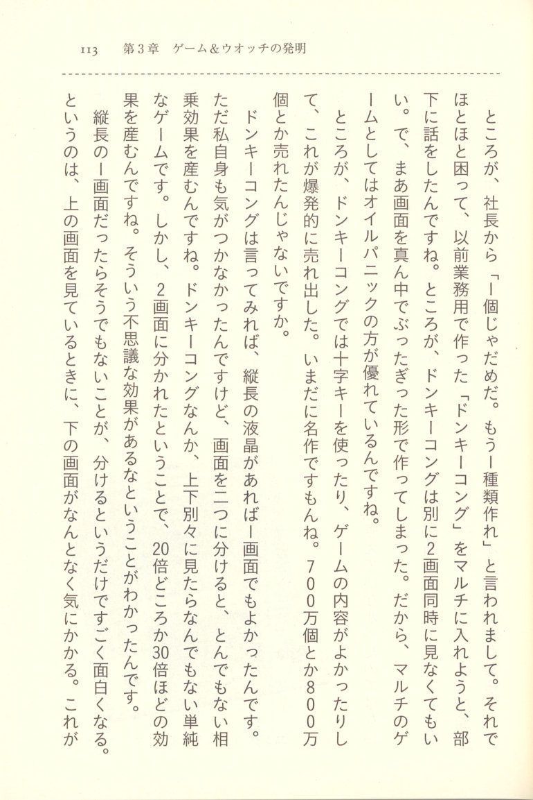
 p.117 That's what adds so much to the fun of it — the two screens being close together means that if you take your eyes off one, you're in trouble, and that "you can't afford to look away" quality is what makes it so interesting.
p.117 That's what adds so much to the fun of it — the two screens being close together means that if you take your eyes off one, you're in trouble, and that "you can't afford to look away" quality is what makes it so interesting.
[IMAGE: The Donkey Kong Game & Watch (1982), showing the dual-screen handheld in its clamshell form with the Donkey Kong game displayed on both screens]
Game & Watch Saved the LCD!?
At the time, Sharp was also thinking about ways to use LCD beyond calculators, and hadn't yet considered that it could be used in personal computers, I think. Back then, calculators were competing with Casio, and Sharp's timing was just as demand for LCD in calculators was beginning to fall. So Sharp was very grateful. Even now, Sharp's people tell me, "Back then, if it hadn't been for Game & Watch, Sharp—"
 p.118 "Sharp would have—" They were LCD factories that had been trying to miniaturize their displays, and Game & Watch really took off, so they often tell me, "Thanks to you, we were connected all the way up to today's TFT displays." The LCD used in the current Game & Watch is about three times the size of the LCD used in desktop calculators.
p.118 "Sharp would have—" They were LCD factories that had been trying to miniaturize their displays, and Game & Watch really took off, so they often tell me, "Thanks to you, we were connected all the way up to today's TFT displays." The LCD used in the current Game & Watch is about three times the size of the LCD used in desktop calculators.
Copies Are the Sincerest Form of Flattery
There was something called a "mole-bashing game" that was a knockoff of Game & Watch. Knockoff products modeled on Game & Watch started coming out all over the place, and around that time Hong Kong was turning them out one after another. The content was soccer games and the like — pretty uninteresting stuff, I must say. The mole-bashing game was the worst of the lot, I thought. But when I actually tried making a mole-bashing game on Game & Watch, it worked just fine. Quite well, in fact. The sound — that pip-pip electronic beeping I'd heard and dismissed — turned out, once you put it in a mole-bashing game, to be surprisingly good. Where on earth does it come from, I wondered. It turns out the CPU is running, and just the LCD is being switched in and out — that's what makes the sound, you see. It really surprised me.
 p.119 Still, when you find something that clever, it makes you happy. And really, once it gets copied, it's not genuine anymore. Nintendo took a rather laid-back stance on the "sales figures" front, and didn't really pursue things too aggressively. That said, I don't think they weren't bothered at all — they did look into it. It's just that we felt it wasn't worth getting too worked up about the fact that our market was being encroached upon.
p.119 Still, when you find something that clever, it makes you happy. And really, once it gets copied, it's not genuine anymore. Nintendo took a rather laid-back stance on the "sales figures" front, and didn't really pursue things too aggressively. That said, I don't think they weren't bothered at all — they did look into it. It's just that we felt it wasn't worth getting too worked up about the fact that our market was being encroached upon.
What I find wonderful about copy products is that they require just as much effort to make as the original. So rather than copying something, you're better off making it from scratch. That's why when I look at a copy product and compare it to the original, I think, "Why didn't they just make their own?" and I'm actually pleased. I'm pleased because my original had that much impact.
"Why Do You Keep Something That Doesn't Sell?"
With Game & Watch, we were out walking the world doing sales promotions. The trade department opened up markets for us everywhere. In Sweden, it was incredibly popular there — in Sweden
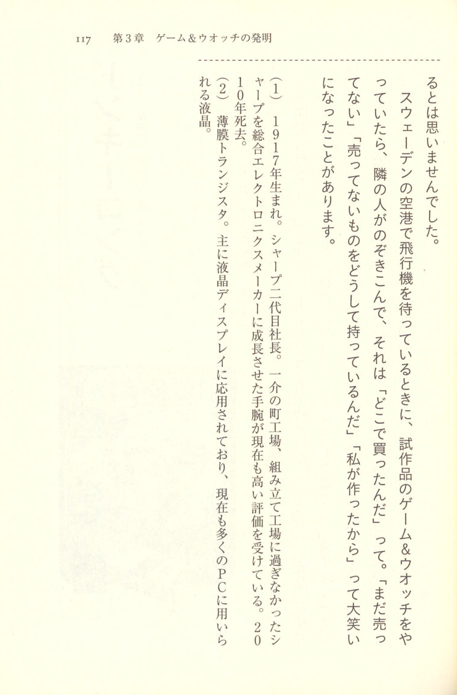
(1) Born in 1917. Second-generation president of Sharp. What had been nothing more than a small-town assembly workshop grew into a major comprehensive electronics manufacturer, and is still highly regarded today. Died in 2004, age 20— [*sic*].
(2) Thin-film transistors. Primarily used in liquid crystal displays, and now found in many PCs as well as liquid crystals.
 p.121 Donkey Kong
p.121 Donkey Kong
1981 (Showa 56) — Arcade Game
A hallmark of Yokoi's work is that he develops both hardware and software simultaneously. Today it is common knowledge that hardware specialists handle the hardware while dedicated software programmers handle the software — but Yokoi designs the hardware and handles the software development himself, all as part of a single "product." In interviews, Yokoi has said more than once that he is not a "technician." He laughs and describes himself as a "technologist," but behind that lies his confidence: "I'm not some engineer who just builds difficult technical things — and I'm not just a programmer who can only write software. I am doing product development."
[IMAGE: Arcade promotional flyer for Donkey Kong, showing the cabinet and colorful game artwork featuring Donkey Kong and characters, with the Nintendo logo and the text "ドンキーコング" (Donkey Kong)]
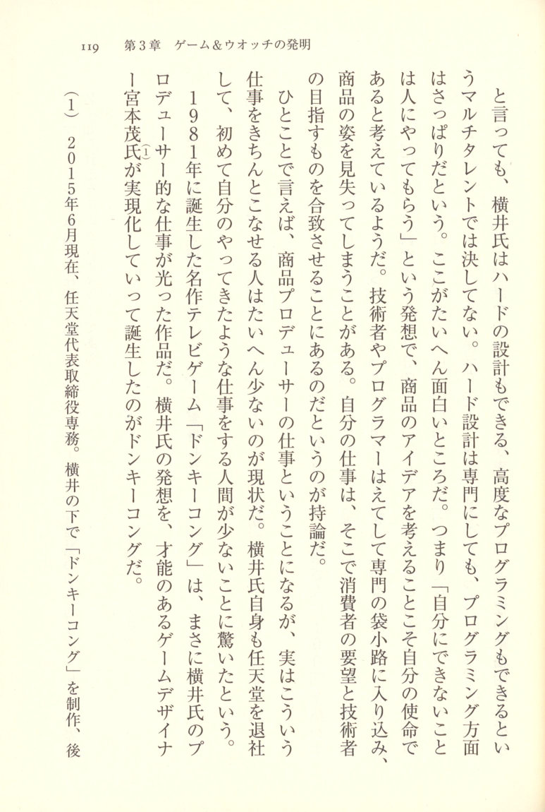
In 1981, the now-legendary television game *Donkey Kong* was born. It was a work that brought Yokoi's ideas to light through the talents of a gifted game designer. Yokoi's producer-like role gave rise to the masterpiece, and *Donkey Kong* was created under Yokoi by the talented game designer who later went on to produce it — Shigeru Miyamoto (宮本茂).
(1) As of June 2015, Executive Representative Director of Nintendo. After working under Yokoi, Miyamoto produced *Donkey Kong*, and subsequently—
 p.123 went on to become the central figure in Nintendo's computer game software development, giving the world "Mario" — the game creator known the world over.
p.123 went on to become the central figure in Nintendo's computer game software development, giving the world "Mario" — the game creator known the world over.
The circuit boards meant to be discarded were transformed into Donkey Kong
The reason *Donkey Kong* is said to have been the first arcade game made by Nintendo is not widely known. When players saw it for the first time, they instinctively felt — "I'd pay 100 yen for this." The wild gunman at the arcade, you see, made people feel it viscerally: "This game has something." Customers would pay 100 yen without hesitation. "What is this setup all about?" they'd think the moment they saw it. So it wasn't simply that the game itself was good enough to pull in customers — it's just that getting someone to part with 100 yen is actually quite difficult, or so I believed. Prize machines, in other words — when you play a game at an arcade, prizes come out, so naturally people make things they think will sell. Around that time, within the company, someone had made a game that wasn't selling, and three thousand commercial arcade boards were
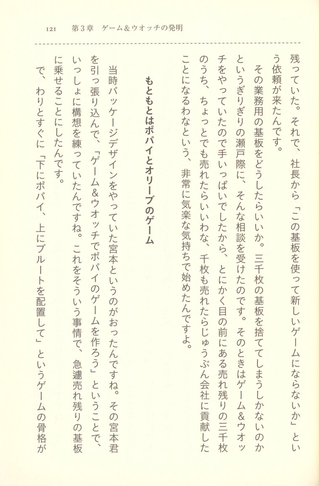
The Game Was Originally Popeye and Olive
At the time, the package designer was a fellow named Miyamoto. So this Miyamoto said, "Let's make a Popeye game." Given that circumstance, with the unsold boards on hand, we pulled him in and together worked out a concept — Game & Watch with Popeye — and right away the skeleton of a game emerged: "Popeye on the bottom, Bluto on top, with Olive placed in between."
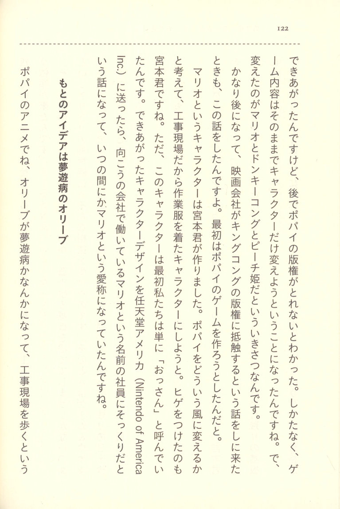
The Original Idea Was Olive the Sleepwalker
In the Popeye anime, Olive becomes a sleepwalker and wanders through a construction site —
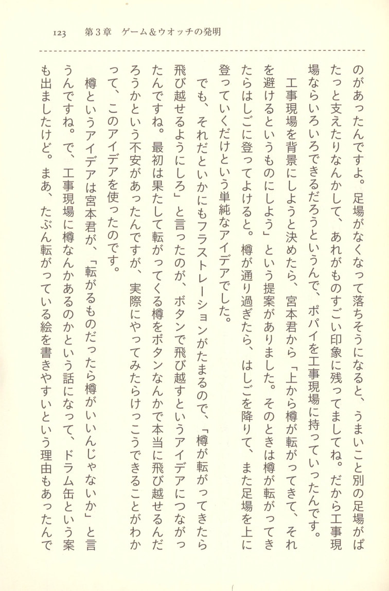
 p.127 But then, thinking about it now, the image of a "barrel" is apparently quite strong — and conversely, that barrel imagery has taken on a life of its own, so that recently things like pirate ships have started appearing in "Super Donkey Kong." Well, "Donkey Kong" — it's not really about barrels, is it?
p.127 But then, thinking about it now, the image of a "barrel" is apparently quite strong — and conversely, that barrel imagery has taken on a life of its own, so that recently things like pirate ships have started appearing in "Super Donkey Kong." Well, "Donkey Kong" — it's not really about barrels, is it?
As mentioned in an interview, Donkey Kong originally started out as a Popeye game. The three characters who expanded the game at the high-rise construction site backdrop — Popeye, Olive, and Bluto — became the basis for Donkey Kong's characters. This led to the copyright issues around Popeye = Mario, Olive = Peach, and Bluto = Donkey Kong. This story is a very interesting one, but it actually concerns something I really want to talk about regarding game production.
One important episode I want to include here is the story of Mario, Olive = Peach, Bluto = Donkey Kong — and the very strange and fascinating topic it contains.
Recently, games have many so-called character-based products, and a certain formula involving boys' manga magazines and manga has come to hold true — to the point where anime → games → character merchandise, and when you look only at the games themselves, there are many whose content is close to poor work, and there are many voices saying the results are leading to a shrinking of the game market.
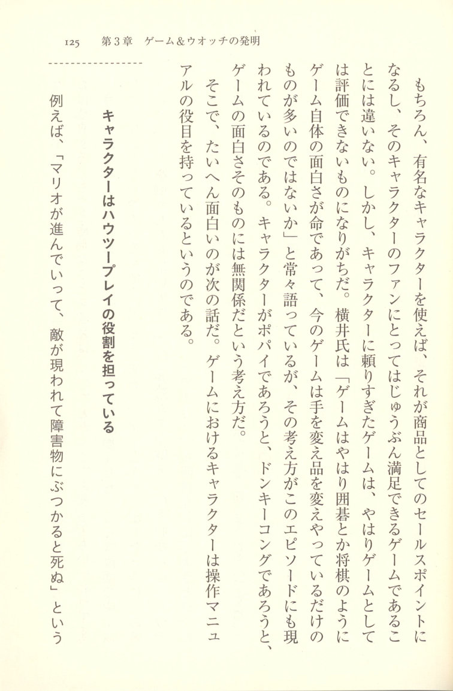
The idea here is that characters in games serve as operation manuals — they are extraordinarily interesting in that respect. And what makes them so interesting is the subject of the next discussion.
Characters serve the role of how-to-play guides
For example, "Mario advances, an enemy appears and he runs into an obstacle and dies" — that is
 p.129 something that makes a game work. To put it in even more extreme terms, you could replace that character with Mickey Mouse, or with ○, △, or any other symbol, and the game would still function. More to the point, when you put out an action game with similar-looking things on screen and replace them with ○ and △, everyone understands at a glance — ○ is the enemy, △ is the ally, so you can figure out the game without a manual. The customers don't need a manual, which is wonderful. Of course, it's written quite nicely in instruction booklets, but the customers aren't going to bother reading them, and I thought that was fine.
p.129 something that makes a game work. To put it in even more extreme terms, you could replace that character with Mickey Mouse, or with ○, △, or any other symbol, and the game would still function. More to the point, when you put out an action game with similar-looking things on screen and replace them with ○ and △, everyone understands at a glance — ○ is the enemy, △ is the ally, so you can figure out the game without a manual. The customers don't need a manual, which is wonderful. Of course, it's written quite nicely in instruction booklets, but the customers aren't going to bother reading them, and I thought that was fine.
In the world of Donkey Kong, what the character does is act as a remarkably strong how-to-play guide for the game, you see. In the lower-left there's Popeye, and he has to make Bluto climb up to rescue Olive above — that's the role the characters are playing. So in the game, if there's a character called "Popeye being chased from the left" and the image is that "Olive is being carried away," then if a user who doesn't move gets close to Popeye, he thinks, "Olive is being taken away," and he tries his very best — that's what Miyamoto said. But if the character doesn't move, then fire appears from behind and
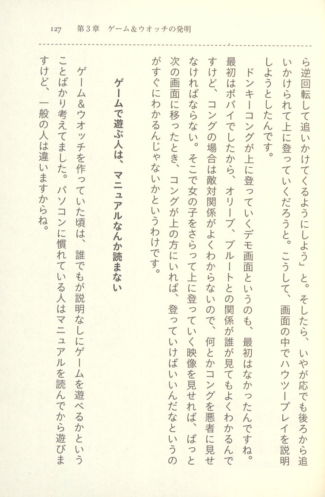
People who play games don't read manuals
Around the time I was making Game & Watch, everyone thought you could play games without any explanation — that was the common understanding. People who were familiar with computers would read manuals before playing, but
 p.131 ordinary game players don't read manuals before playing. So the game itself has to communicate everything.
p.131 ordinary game players don't read manuals before playing. So the game itself has to communicate everything.
After that, I had Miyamoto produce a game I had planned — "Mario Bros." — a manga film (animation) featuring a turtle. The turtle flips upside down and pops out of its shell. I thought we should turn this into a game. It's a manga character, so the concept came from turtles. Besides turtles, crabs also come out, and crabs don't have shells they can be knocked out of — so that's where the idea came from, the game developed out of that. Mr. Miyamoto found this interesting and turned it into a game, and the characters that came out of it included Mario.
After that, his work went on to make Super Mario a huge hit. So none of our staff knew from the start that it would be Mario — they'd been calling him Mario all along, so it just stuck. (Laughs) That's why when our employees say "Yokoi came up with the name," I think to myself, well, as far as my own thinking goes, I'm the one who named it, so anyone who knows that would know — but customers receive it however they receive it, and that's fine with me. What matters is that someone made a great game, and if customers are satisfied, that's all that needs to happen.
(2) "Mario Bros." — A Famicom game released in 1985 that swept up the massive pre-crash boom. Shigeru Miyamoto was designer, Koji Kondo was in charge of music. It can also be described as a social phenomenon.
 p.132 1983 (Showa 58) —
p.132 1983 (Showa 58) —
The D-Pad (Cross Key)
※ "Cross Key" is the common name; the official name is "D-Pad"
[IMAGE: Photograph of a Famicom controller showing the D-pad on the left and buttons on the right]
As Yokoi continued developing games and toys, he generated various patents that brought him to the attention of the broader gaming and computer industries. Among his inventions, the one that would later shine brightest in the computer and home electronics world was the D-pad (cross key) — the directional control pad found on the Famicom's controller.
The D-pad, as it appeared on the Famicom's controller, was subsequently adopted by nearly all home game consoles. Some details were refined along the way, but the cross-shaped directional key that followed went on to be adopted by home computers, mobile phones, and other devices requiring complex input operations — with such momentum that it seemed inevitable. Even so, Yokoi himself believed he had come up with something superior to the joystick. The reason the D-pad could not be adopted by dedicated portable game machines is that the prototype for this D-pad was a joystick found in a thin handheld game device.
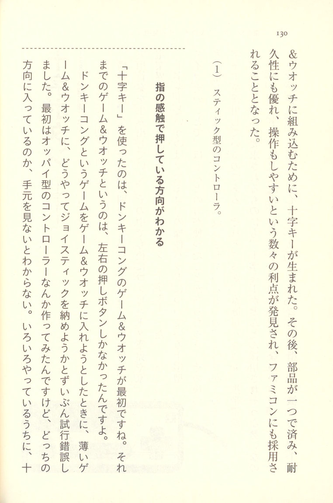
(1) Stick-type controller.
You can tell which direction you're pressing by the feel of your fingers
The first to use the "D-pad" was the Donkey Kong Game & Watch. That's because Donkey Kong Game & Watch could only have left and right buttons. So when we tried to fit a joystick into the thin Game & Watch, we went through quite a bit of trial and error. In the process, the D-pad gradually took shape. At first we were making something like an Oppai-type controller — you know, where you can't see which direction you're pressing without looking down at your hands. All sorts of things were going on, but in the end the D-
 p.134 pad turned out to be a cross-shaped key. That's because with a cross-shaped key, you can tell by the feel of your fingers alone which direction you're pressing — you just press down, and the bottom rises up. That's the principle. This is what makes it so important: with a D-pad, the touch alone tells you which direction you're pressing. In other words, we arrived at the idea of fitting a joystick into the thin Game & Watch, while still ensuring you could press reliably and feel clearly which direction you were pressing.
p.134 pad turned out to be a cross-shaped key. That's because with a cross-shaped key, you can tell by the feel of your fingers alone which direction you're pressing — you just press down, and the bottom rises up. That's the principle. This is what makes it so important: with a D-pad, the touch alone tells you which direction you're pressing. In other words, we arrived at the idea of fitting a joystick into the thin Game & Watch, while still ensuring you could press reliably and feel clearly which direction you were pressing.
[IMAGE: Diagram of an "oppai-type" (dome-shaped) controller concept, with arrows indicating the four directional press points around the dome]
I never thought it was a particularly brilliant idea myself
Nintendo does have a patent department, and I never personally thought, "This is a brilliant idea!" The patent department apparently filed a patent application without my knowledge — that was the situation. To be honest, whoever thought of it, it's not as if no one else could have come up with a cross-shaped key. I myself figured it out, so I always assumed something similar must already exist out there — and left it at that.
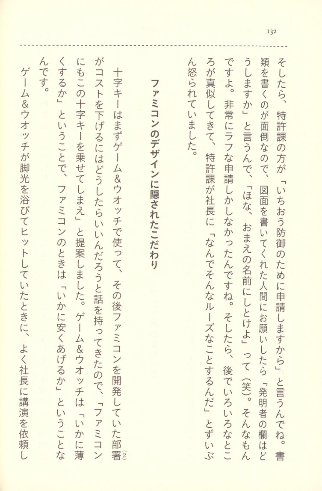
It's a very rough application process, you see. "We're not going to bother filing a proper application" — that's how it was. And then afterward, various things happened, and the patent department got quite upset.
The hidden design philosophy behind the Famicom
The D-pad was first used in Game & Watch, and after that, when the team developing the Famicom came to us, they proposed, "Let's put this D-pad on the Famicom." The first thing I said was, "How do we bring down the cost?" and I suggested, "Let's get rid of this D-pad." Game & Watch is "how thin can we make it" — and the Famicom, when it became a hit, I was often asked to give talks to the company president about "how cheaply can we make it," you see. And when Game & Watch was basking in the spotlight and becoming a hit, at the time the Famicom was launched, the president frequently asked me to give lectures on —
 p.136 — how to make things cheaply. Around that time, you see, TV games like the Pyu-ta and the Atari 2600 and that sort of thing were coming out one after another, and people were frequently asking the president, "Are we going to get into TV games too?" Entertainment products like that were selling well.
p.136 — how to make things cheaply. Around that time, you see, TV games like the Pyu-ta and the Atari 2600 and that sort of thing were coming out one after another, and people were frequently asking the president, "Are we going to get into TV games too?" Entertainment products like that were selling well.
The president's take was, "There's no way we can sell something at 40,000 or 50,000 yen." The Famicom story came about because Mitsubishi Electric came to us with a chip proposal, and Development Section 2 was asked to "look into it." At the time, cutting it to 10,000 yen wasn't going to happen — the feeling was, "There's no way to sell this even as a TV game." And Development Section 2 was told, "Well, keep the examination going."
Then, all of a sudden, the order came down from the president: "Make a TV game that breaks the 10,000-yen barrier." After that, the next thing became the Game & Watch. But no matter what, it was TV games and nothing but TV games. So the instruction came from the president to Development Section 2: "Make a TV game that breaks the 10,000 yen barrier."
Ordinarily, you can't cut it to 10,000 yen technologically. So the idea of cutting it to 10,000 yen meant that, in order to make it even a little cheaper, the Famicom console body and the controller were placed with the designers who came to us — and the designs they produced became the Famicom, you see. How cheaply to build it — that was the thinking kept foremost in mind.
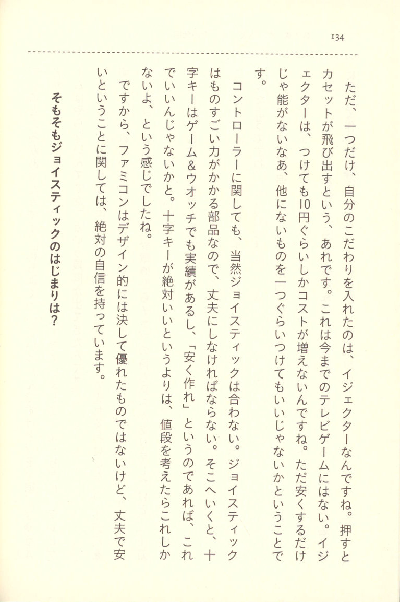
So, on the subject of the joystick to begin with — where did the joystick originate?
 p.138 The joystick moves in the cross-direction. A joystick and a button — the one thing about having just one button is that in Space Invaders, the joystick is all the way to the left. But that's strange, isn't it, the joystick being on the left. The current game uses the joystick with the right hand, so left-handed control isn't natural, is it? With the joystick. Rather, I think the real problem isn't that it's left or right — it's that you need to modify the hardware because the timing of pressing the button is crucial, and you can't do that easily, so it didn't take off. With Donkey Kong, once you play through all the games that came after it, you realize from the start it was all right there — skilled players at games get fast, so the brake—
p.138 The joystick moves in the cross-direction. A joystick and a button — the one thing about having just one button is that in Space Invaders, the joystick is all the way to the left. But that's strange, isn't it, the joystick being on the left. The current game uses the joystick with the right hand, so left-handed control isn't natural, is it? With the joystick. Rather, I think the real problem isn't that it's left or right — it's that you need to modify the hardware because the timing of pressing the button is crucial, and you can't do that easily, so it didn't take off. With Donkey Kong, once you play through all the games that came after it, you realize from the start it was all right there — skilled players at games get fast, so the brake—
What is a controller that replaces the joystick?
The thing about a joystick is that you can't operate it in real time. A delay of 0-point-something seconds—
 p.139 A decisive controller to replace the joystick is, in the end, going to have the same problems as the joystick — it can't provide any greater operability than that. So, a joystick won't do. On that point, personal computers and the like use controllers that are fairly loose, but in the case of games, that's where you can die or not die. So the question is really about the PC. Thinking about it in the sense that a joystick controls things without using your muscles — I think the cross-key is better than a joystick. The next generation of multimedia devices will use keyboards, says Bill Gates of Microsoft. And sure enough, Nikkei Newspaper came to my place to find out where the cross-key originated, and it became quite a talking point — though up to that point, the cross-key had never been a topic of conversation at all.
p.139 A decisive controller to replace the joystick is, in the end, going to have the same problems as the joystick — it can't provide any greater operability than that. So, a joystick won't do. On that point, personal computers and the like use controllers that are fairly loose, but in the case of games, that's where you can die or not die. So the question is really about the PC. Thinking about it in the sense that a joystick controls things without using your muscles — I think the cross-key is better than a joystick. The next generation of multimedia devices will use keyboards, says Bill Gates of Microsoft. And sure enough, Nikkei Newspaper came to my place to find out where the cross-key originated, and it became quite a talking point — though up to that point, the cross-key had never been a topic of conversation at all.
② The second development division.
③ Released in 1982 by Tomy Industries (now Takara Tomy), the 16-bit microcomputer (Hobby Pa—
 p.140 ④ More precisely, the Atari 2600. Released in 1977 by Atari, Inc. (USA) as the Atari Video Computer System.
p.140 ④ More precisely, the Atari 2600. Released in 1977 by Atari, Inc. (USA) as the Atari Video Computer System.
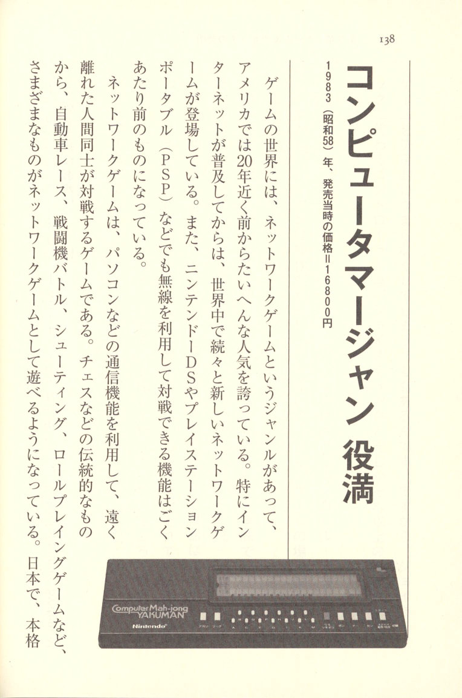
Computer Mahjong Yakuman
[IMAGE: The Computer Mahjong Yakuman hardware unit — a rectangular tabletop device with a display panel and a row of buttons along the front, branded "Computer Mah-jong YAKUMAN" and "Nintendo"]
In the world of gaming, there is a genre known as the network game, and it enjoys enormous popularity. In America, the internet became widespread nearly twenty years ago, and since then, new network games have been appearing one after another around the world. Portable consoles such as the Nintendo DS and PlayStation Portable (PSP) have also come to offer the ability to play against opponents wirelessly. Network games use the communication functions of personal computers and similar devices to let players in distant locations compete against one another. Such games include chess and other traditional titles, car racing, combat flight battle games, shooting games, role-playing games, and many others — all now playable as full-fledged network games. In Japan, too, serious network gaming has arrived, with everything from mahjong races to battle simulations available online.
 p.142 What swept the world as a network-based competitive game was the Game Boy's "Pocket Monsters." When you think about it now, it really is quite remarkable that the Game Boy came equipped with a communication function. Today, everyone knows what communication features can do — but at the time when Pocket Monsters, head-to-head Tetris, and other games with built-in communication functions were made, there was an era when such head-to-head gaming didn't yet exist.
p.142 What swept the world as a network-based competitive game was the Game Boy's "Pocket Monsters." When you think about it now, it really is quite remarkable that the Game Boy came equipped with a communication function. Today, everyone knows what communication features can do — but at the time when Pocket Monsters, head-to-head Tetris, and other games with built-in communication functions were made, there was an era when such head-to-head gaming didn't yet exist.
Yokoi himself said he found the idea rather vague: "I never thought too deeply about it — the cost of adding it wasn't going to go up, and somehow I had this hazy feeling that something interesting might come of it."
That vague feeling gave birth to this interesting game. And what was that feeling, exactly? It was, in reality, this: the communication function of Computer Mahjong Yakuman. Computer Mahjong Yakuman's communication function was, in itself, nothing particularly special — but what it meant was that if you connected two units with a cable, you could play head-to-head against another human being. CPU-based mahjong is all well and good, but being able to play against a real person made it genuinely enjoyable, and as a game machine it was, for its time, a groundbreaking device.
 p.143 With Computer Mahjong Yakuman, five tiles come out as white.
p.143 With Computer Mahjong Yakuman, five tiles come out as white.
What Yakuman means is that it can be expressed using an LCD display — something different from Game & Watch. So, the thinking was: Nintendo had originally been selling mahjong tiles anyway, so why not try mahjong as an experiment — could one person play it casually on their own? That was the idea behind it. You can't play mahjong without four people gathering, and you can't do it alone, but the LCD could represent the tiles, so we started from there.
Back then, since you could still carry mahjong tiles around with you, I was hand-held — portable — and what concerned me was whether the tiles could be represented with dots somehow, and whether the flipping of tiles could be done without worry. I thought quite a lot about it. There was a feeling that without tiles in the car, the tiles would flip around unexpectedly. The tiles could be represented with any number of dots.
It was terribly hard work. Terrible conversations, really — but the computer side, from the very beginning, is on tenpai, you see. Humans reach a certain level of tenpai too, and if you hear a story like this, you'd want to quietly keep it to yourself — because the computer wins on its own, you see. It ends up on tenpai from the start. And that part, if anyone heard about it, they'd want to keep it hushed up — because it just goes into riichi on its own, doesn't it.